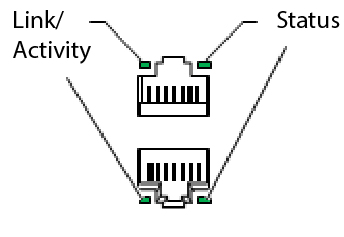

This troubleshooting procedure applies to failure at the LAN
Switch. The steps in this procedure should be performed after the equipment has been
checked remotly with the network management tool.
- 1
- Technical support team
- Electric
- 10
-
Check that all lan cables properly inserted and the locking
clip of the plug is engaged.
-
Check the ports LED's for any signs of anomaly.
Figure 1. Switch port
LED

| LED |
Color |
State and Description |
| Link/Activity |
Green |
- Blinking—The port and the link are active, and
there is link activity
- On steadily—The port and the link are active, but
there is no link activity.
- Off—The port is not active.
|
| Status |
Green |
Indicates the speed. The
speed indicators are:
- One blink per second—10 Mbps
- Two blinks per second—100 Mbps
|
-
If an amber or red LED is present that means there is an
alarm or malfunction and needs to be checked remotely.